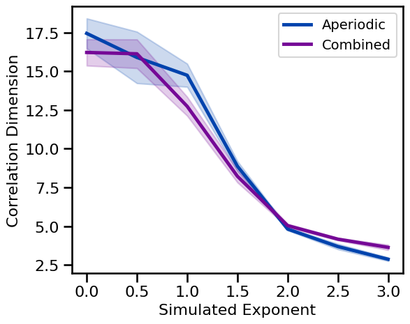
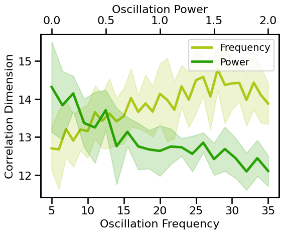
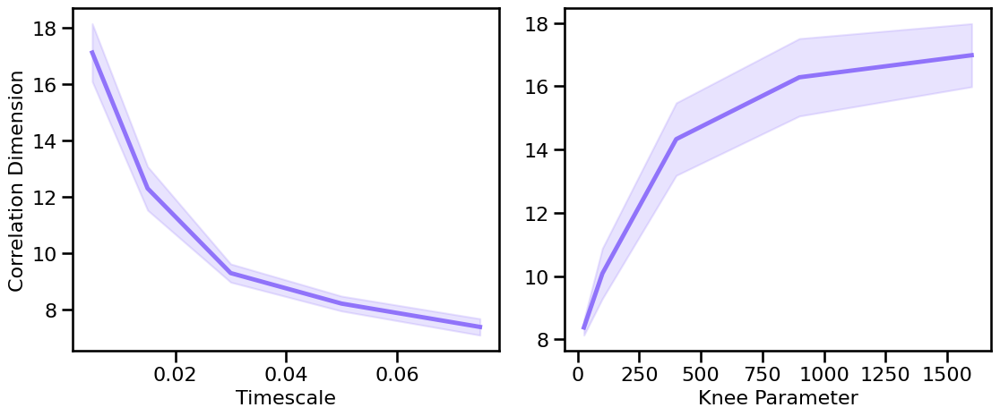
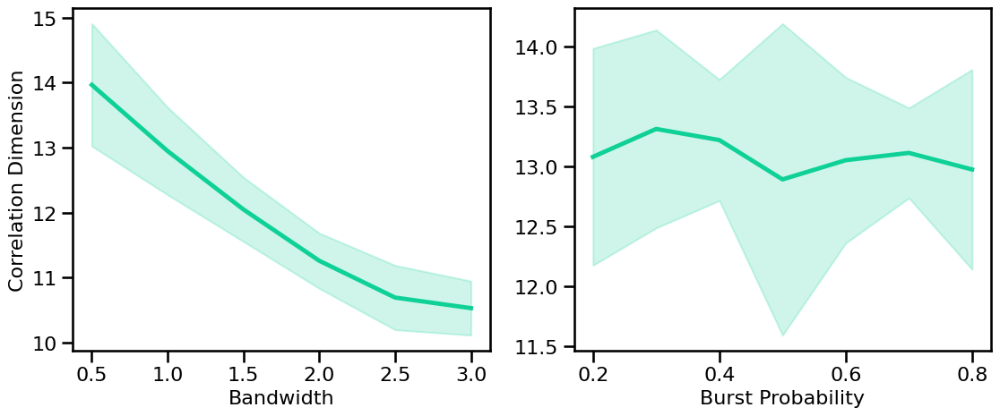

Fractal Dimension (State Space)
Contents
Fractal Dimension (State Space)¶
This notebook covers Fractal Dimension measures that work in state space, including:
Correlation Dimension
# Setup notebook state
from nbutils import setup_notebook; setup_notebook()
from neurodsp.sim import sim_powerlaw, sim_synaptic_current, sim_combined
from neurodsp.utils import set_random_seed
# Import custom project code
from apm.io import APMDB
from apm.run import run_sims, run_sims_load
from apm.methods import correlation_dimension
from apm.methods.settings import CD_PARAMS
from apm.plts.sims import plot_ap_sims, plot_pe_sims, plot_sims_two
from apm.plts.settings import COLORS
from apm.plts.utils import figsaver
from apm.sim.examples import get_examples, check_examples
from apm.sim.settings import N_SIMS2 as N_SIMS
from apm.sim.defs import SIM_ITERS
Settings¶
# Get current sampling rate
fs = SIM_ITERS.fs
# Settings for saving figures
SAVE_FIG = True
FIGPATH = APMDB().figs_path / '23b_fractal_state'
# Create helper function to manage figsaver settings
fsaver = figsaver(SAVE_FIG, FIGPATH)
# Set the random seed
set_random_seed(111)
# Define collection of example signals
examples = get_examples()
Correlation Dimension¶
The correlation dimension is a measure of the dimensionality of the space of a set of points.
Correlation dimension is generally considered to be a type of fractal dimension measure.
# Check correlation dimension measure parameters
print(CD_PARAMS)
{'delay': 4, 'dimension': 20}
Calculate Correlation Dimension on Example Signals¶
# Check the correlation dimension values across some example signals
check_examples(examples, correlation_dimension, CD_PARAMS, 'correlation dimension')
Computed correlation dimension:
powerlaw : 14.2760
synaptic : 15.0800
knee : 10.0361
oscillation : 1.2896
burst : 0.6142
combined : 13.1042
comb_burst : 13.8552
comb_peak : 12.2803
Correlation Dimension: Aperiodic Measures¶
# Run simulations calculating correlation dimension across exponents
cd_sims_exp = run_sims(sim_powerlaw, SIM_ITERS['ap_exp'],
correlation_dimension, CD_PARAMS, N_SIMS)
# Run simulations calculating correlation dimension across exponents with an oscillation
cd_sims_comb = run_sims(sim_combined, SIM_ITERS['comb_exp'],
correlation_dimension, CD_PARAMS, N_SIMS)
# Plot correlation dimension estimates across aperiodic variations
plot_ap_sims(cd_sims_exp, cd_sims_comb, 'Correlation Dimension', **fsaver('cd_ap'))

Correlation Dimension: Periodic Variations¶
# Run simulations calculating correlation dimension across oscillation frequency
cd_sims_freq = run_sims(sim_combined, SIM_ITERS['osc_freq'],
correlation_dimension, CD_PARAMS, N_SIMS)
# Run simulations calculating correlation dimension across oscillation power
cd_sims_pow = run_sims(sim_combined, SIM_ITERS['osc_pow'],
correlation_dimension, CD_PARAMS, N_SIMS)
# Plot correlation dimension estimates across periodic variations
plot_pe_sims(cd_sims_freq, cd_sims_pow, 'Correlation Dimension', **fsaver('cd_pe'))

Correlation Dimension: Knee Variations¶
# Run simulations calculating correlation dimension across timescales
cd_sims_tscales = run_sims(sim_synaptic_current, SIM_ITERS['syn_tscales'],
correlation_dimension, CD_PARAMS, N_SIMS)
# Run simulations calculating correlation dimension across peak bandwidths (sims from file)
cd_sims_knee = run_sims_load('ap-knee-' + str(fs), correlation_dimension, CD_PARAMS, N_SIMS)
# Plot the estimated correlation dimension across different timescales & knees
plot_sims_two(SIM_ITERS['syn_tscales'].values, cd_sims_tscales, 'Timescale',
SIM_ITERS['kn_knee'].values, cd_sims_knee, 'Knee Parameter',
ylabel='Correlation Dimension', color=COLORS['KN'], **fsaver('cd_kn_vars'))

Correlation Dimension: Peak Variations¶
# Run simulations calculating correlation dimension across peak bandwidths (sims from file)
cd_sims_bw = run_sims_load('comb-bw-' + str(fs), correlation_dimension, CD_PARAMS, N_SIMS)
# Run simulations calculating correlation dimension across burst probabilities
cd_sims_burst = run_sims(sim_combined, SIM_ITERS['comb_burst'],
correlation_dimension, CD_PARAMS, N_SIMS)
# Plot the estimated correlation dimension across periodic variations
plot_sims_two(SIM_ITERS['peak_bw'].values, cd_sims_bw, 'Bandwidth',
SIM_ITERS['comb_burst'].values, cd_sims_burst, 'Burst Probability',
ylabel='Correlation Dimension', color=COLORS['BW'], **fsaver('cd_pe_vars'))

Conclusions¶
Correlation dimension:
generally decreases with increasing aperiodic exponent
is broadly consistent across variations of oscillation frequency and power